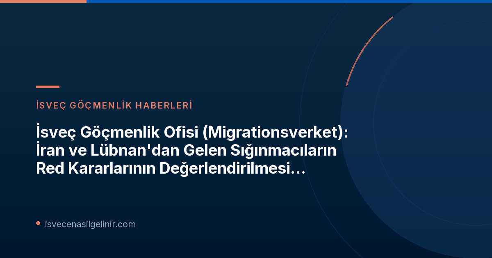

Migrationsverket'ten Son Karar: Neden Askıya Alındı?
Migrationsverket, İran ve Lübnan'daki durumun sürekli değiştiğini ve bu ülkelerden gelen kişilerin koruma ihtiyacını öngörülü bir şekilde değerlendirmek için yeterli güvenilir veri bulunmadığını belirtiyor. Bu belirsizlik, başvuruların adil ve doğru bir şekilde karara bağlanmasını engelliyor.
İran için ilk askıya alma tavsiyesi 14 Ocak 2026'da, Lübnan için ise 6 Mart 2026'da yürürlüğe girmişti. Son uzatma 12 Ekim 2026'da sona ermişti. Mevcut durumun devam etmesi nedeniyle bu kararın tekrar uzatılması kaçınılmaz hale geldi.
Kimleri Etkiliyor ve Süreç Nasıl İşleyecek?
Bu karar, özellikle İran ve Lübnan uyruklu kişilerin uluslararası koruma başvurularındaki "red" kararlarını ilgilendiriyor. Mevcut durumda, Migrationsverket bu başvurularda red kararı vermemeyi tavsiye ediyor.
Askıya Alma Kararının Detayları
| Ülke | İlk Askıya Alma Tarihi | Önceki Uzatma Bitiş Tarihi | Yeni Uzatma Bitiş Tarihi | Etkilenen Başvuru Türü |
|---|---|---|---|---|
| İran | 14 Ocak 2026 | 12 Ekim 2026 | 12 Şubat 2027 | Uluslararası Koruma (Red Kararları) |
| Lübnan | 6 Mart 2026 | 12 Ekim 2026 | 12 Şubat 2027 | Uluslararası Koruma (Red Kararları) |
Süreç Takibi ve Değişiklikler
Migrationsverket, her iki ülkedeki gelişmeleri yakından takip etmeye devam ediyor. Koşulların değişmesi halinde, 12 Şubat 2027 tarihinden önce de yeni tavsiyeler veya kararlar alınabilir. Başvuru sahiplerinin ve avukatlarının bu süreci dikkatle izlemesi büyük önem taşımaktadır.
İsveç'te vatandaşlık başvuru süreçleri hakkında daha fazla bilgi ve İsveç Vatandaşlık Testi'ne hazırlık materyalleri için sitemizi ziyaret edebilirsiniz.
Bu Karar Sizin İçin Ne Anlama Geliyor?
Eğer İran veya Lübnan'dan geliyorsanız ve uluslararası koruma başvurunuz varsa, başvurunuzla ilgili red kararı alma ihtimaliniz bu süre zarfında düşüktür. Ancak bu, başvurunuzun otomatik olarak kabul edileceği anlamına gelmez, sadece red kararı sürecinin askıya alındığı anlamına gelir.
Başvuruların tamamen durdurulmadığı, sadece red kararı verme yetkisinin sınırlandığı unutulmamalıdır.
Uzman göçmenlik danışmanlarından destek almak, durumunuzu en doğru şekilde anlamanıza ve uygun adımları atmanıza yardımcı olacaktır.
İsveç Göçmenlik Hukukunda Güncel Gelişmeler ve Danışmanlık
İsveç göçmenlik hukuku sürekli değişen ve karmaşık bir alandır. Özellikle hassas durumlar söz konusu olduğunda güncel bilgilere erişim ve uzman danışmanlığı hayati önem taşır.
Bu tür askıya alma kararları, ülkelerdeki siyasi, sosyal veya güvenlik durumlarındaki ani ve öngörülemeyen değişikliklere bir yanıt olarak Migrationsverket tarafından alınmaktadır. Amaç, başvuru sahiplerine adil bir süreç sağlamak ve uluslararası koruma standartlarını korumaktır.
Sıkça Sorulan Sorular (SSS)
- Soru: Bu karar ne zamana kadar geçerli?
- Cevap: Yeni tavsiyeler en geç 12 Şubat 2027 tarihine kadar geçerlidir. Ancak Migrationsverket, gelişmeleri takip ederek bu süreyi öne çekebilir veya uzatabilir.
- Soru: Başvurum otomatik olarak kabul edilecek mi?
- Cevap: Hayır, bu karar red kararlarının değerlendirilmesinin askıya alındığı anlamına gelir. Başvurunuzun nihai sonucu hakkında net bir bilgi için yetkili mercilerden bilgi almanız gerekmektedir.
- Soru: Karar hangi ülkeleri kapsıyor?
- Cevap: Bu karar yalnızca İran ve Lübnan uyruklu kişilerin uluslararası koruma başvurularındaki red kararlarını kapsamaktadır.
Referanslar
- Migrationsverket Resmi Duyurusu: Migrationsverket
İsveç Göçmenlik Süreçleri Hakkında Güncel Bilgiler
İsveç'te yaşam, çalışma, eğitim ve vatandaşlık süreçleri hakkında en güncel ve güvenilir bilgilere ulaşmak için sitemizi takip edin. Göçmenlik hukuku ve prosedürleri konusunda uzman desteği alın.